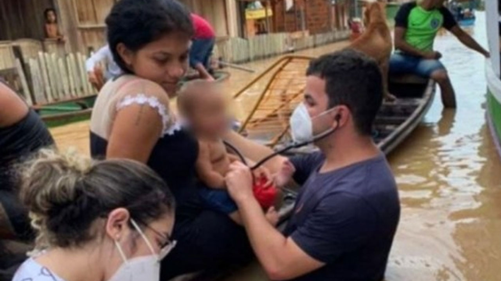
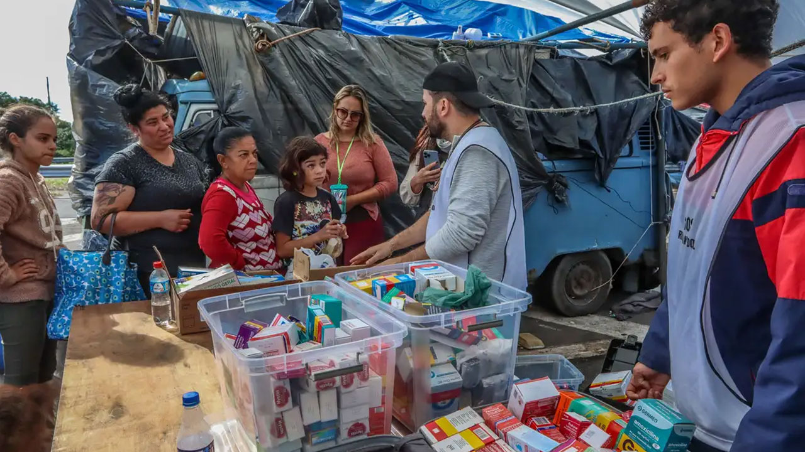

Gestão de Riscos de Desastres e Emergências em Saúde (GRDE em Saúde)
Seja bem-vindo(a) à terceira aula do módulo I.
Nesta aula abordaremos as etapas e os componentes da Gestão de Riscos de Desastres e Emergências em Saúde (GRDE em Saúde), destacando sua importância no enfrentamento dos eventos climáticos e na organização das ações no âmbito do Sistema Único de Saúde.
Ao final, você será capaz de identificar as etapas do processo de GRDE em Saúde e entender a finalidade de cada uma delas no enfrentamento de eventos climáticos, em especial, na Atenção Primária à Saúde.
Etapas da Gestão de Riscos de Desastres e Emergências em Saúde (GRDE em Saúde)
Vimos até aqui como as equipes de saúde vêm enfrentando diferentes tipos de desastres e emergências em saúde pública, que podem ocorrer de forma simultânea ou sequencial em praticamente todas as regiões do país. Vamos refletir nesse contexto.
Diante da impossibilidade do SUS de eliminar as diferentes ameaças relacionadas às mudanças climáticas, como organizar suas equipes para lidar com os diversos riscos produzidos?
O SUS tem imensa responsabilidade na redução dos riscos e impactos dos desastres e de outras emergências em saúde pública, devendo fortalecer suas capacidades nas funções de vigilância em saúde (sanitária, epidemiológica, ambiental e saúde do trabalhador) e de atenção e cuidados à saúde (atenção primária, urgências e emergências, e atenção hospitalar). Para que isso aconteça, faz-se necessária a articulação do sistema de saúde em suas diferentes esferas (municipal, regional, estadual e federal), assim como a mais ampla colaboração intersetorial e participação da sociedade, em particular, dos movimentos e representações dos grupos e populações mais vulneráveis ou vulnerabilizados, com base nos princípios do SUS como universalidade, integralidade e equidade (FREITAS; SILVA; ROCHA, 2025).

Foto: Portal de Periódicos Fiocruz.

Foto: Cristine Rochol/ PMPA.
Para cumprir com essa responsabilidade frente aos cenários impostos pelos eventos climáticos, o SUS tem contado com a gestão de risco como estratégia para a organização dos serviços. A Gestão de Riscos de Desastres e Emergências em Saúde (GRDE em Saúde) é um processo cíclico e contínuo, que envolve medidas estabelecidas em etapas interligadas.
touch_app CliqueToque nos botões e entenda cada etapa da GRDE em Saúde:
A GRDE em Saúde envolve medidas combinadas para cada fase que compõe o desastre ou outra emergência em saúde pública (D&ESP). Significa dizer que uma gestão de riscos deve conter ações de resposta colocadas em prática logo após a ocorrência de um evento. Também se caracteriza por um conjunto de medidas que antecipam e previnem a geração de novos fatores de riscos que contribuem para ocorrência, frequência e gravidade dos impactos. Somado a isso, envolve ações de recuperação em médio e longo prazo, que garantam o cuidado integral à saúde das populações afetadas.
Não deixe de ler a matéria “Tragédia no RS: o desafio da saúde mental após a catástrofe”.
A necessidade de implantação da GRDE em Saúde em contextos de desastres como inundações, deslizamentos, enxurradas é mais perceptível pelos gestores de saúde, pois esses eventos possuem uma fase crítica bem evidente e que exigem resposta imediata.
No entanto, os desastres como as inundações graduais, comuns na região amazônica, a seca do semiárido e as estiagens que ocorrem em diferentes estados do país ao longo do ano, são muitas vezes naturalizados e tratados como eventos característicos da região, passando despercebidos pelas equipes de saúde.
Contudo, esses eventos, embora sejam cíclicos e característicos à determinada região, têm se tornado mais intensos, longos e atípicos em consequência das mudanças climáticas. Nesses casos, a GRDE em Saúde não só deve ser aplicada, assim como a ausência de medidas pode ser considerada negligência, acarretando sérios riscos à saúde da população afetada.
Em estudo sobre surtos de diarreia ocorridos no Nordeste do Brasil em 2013, óbitos e internações revelaram que mais de 100 mil pessoas foram acometidas, atingindo principalmente os estados de Alagoas e Pernambuco. Segundo os autores, a causa imediata desses surtos foi o uso de fontes alternativas de água, como cacimbas, poços, caminhões-pipa e reservatórios domésticos. As condições excepcionais de seca, considerada a pior dos últimos 60 anos, bem como a falta de capacidade do setor saúde para atender um grande volume de casos contribuíram para esse cenário. Acesse o estudo.
Durante o processo de GRDE em Saúde, é importante ressaltar que, no contexto das mudanças climáticas, os desastres ou outra emergência em saúde pública (D&ESP) tendem a ser mais frequentes e severos. Essas ocorrências pressionam os sistemas de saúde, de proteção social, a infraestrutura urbana e a gestão territorial, revelando desigualdades e ampliando vulnerabilidades. Resultam em perdas econômicas expressivas, interrupções prolongadas nas cadeias produtivas e aumento da desigualdade social, sobretudo em regiões com menor capacidade de resposta institucional.

Além disso, a destruição da infraestrutura crítica – como hospitais, redes de transporte, estações de tratamento de água e energia – compromete a continuidade de serviços essenciais, especialmente em comunidades já vulneráveis. O deslocamento forçado de populações sobrecarrega regiões vizinhas e intensifica disputas por acesso a recursos escassos, como terra, trabalho, moradia e serviços públicos, ampliando tensões sociais e econômicas (FREITAS; SILVA; ROCHA, 2025).
No âmbito do SUS, as ações de GRDE em Saúde demandam o envolvimento de diferentes serviços, como a Atenção Primária à Saúde, a Rede de Atenção às Urgências e Emergências, a Rede de Atenção Psicossocial, a Rede Nacional de Atenção Integral à Saúde do Trabalhador, a Assistência Farmacêutica, os diferentes componentes da Vigilância em Saúde, os Laboratórios Centrais de Saúde Pública, os Institutos de Pesquisa, dentre outros.
Cada área e/ou serviço do SUS é envolvido em diferentes etapas do processo, de acordo com a tipologia do evento. O conjunto de serviços prestados pela Atenção Primária à Saúde é fundamental para a GRDE em Saúde, como veremos na próxima aula.
O Ministério da Saúde publicou o Plano de Contingência Nacional para Emergências em Saúde Pública por chuvas intensas e desastres associados. Trata-se de um documento técnico que orienta a organização das ações de vigilância, preparação e resposta do setor saúde diante de eventos extremos. Seu conteúdo aborda cenários de risco, impactos à saúde e estratégias operacionais para atuação coordenada nas diferentes fases das emergências. Acesse o Plano de Contingência Nacional.
Há também o guia técnico do Ministério da Saúde que orienta a elaboração de planos de contingência no âmbito da saúde pública. Ele aborda etapas, diretrizes e elementos estruturais necessários para a preparação, resposta e monitoramento de emergências em saúde. Seu objetivo é apoiar gestores e profissionais na organização de ações estratégicas frente a diferentes cenários de risco. Acesse o Guia.